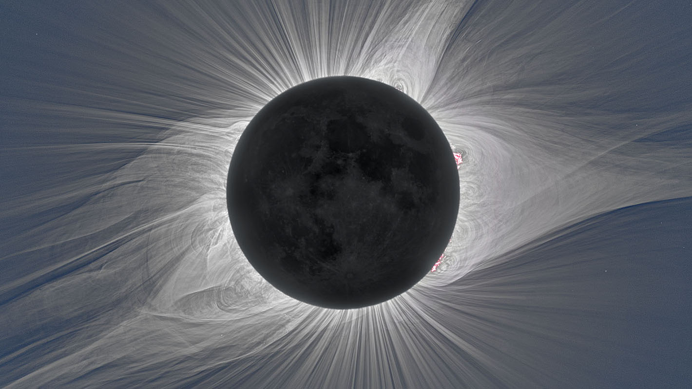
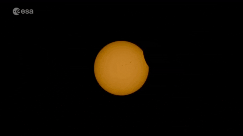

So what is a total solar eclipse? It can be defined as an obscuring of the light from one celestial body
by the passage of another between it and the observer
or between it and its source of illumination
...That's just the boring way of saying it, but for us, it's when the sun gets covered by the moon
and we see this amazing light show! It happens once in a blue moon, so you really have to seize the oportunity
to see one if you get the chance.

In this picture we can see the solar corona, only observable in a solar eclipse

Footage of the last eclipse

Eclipse's shadow path